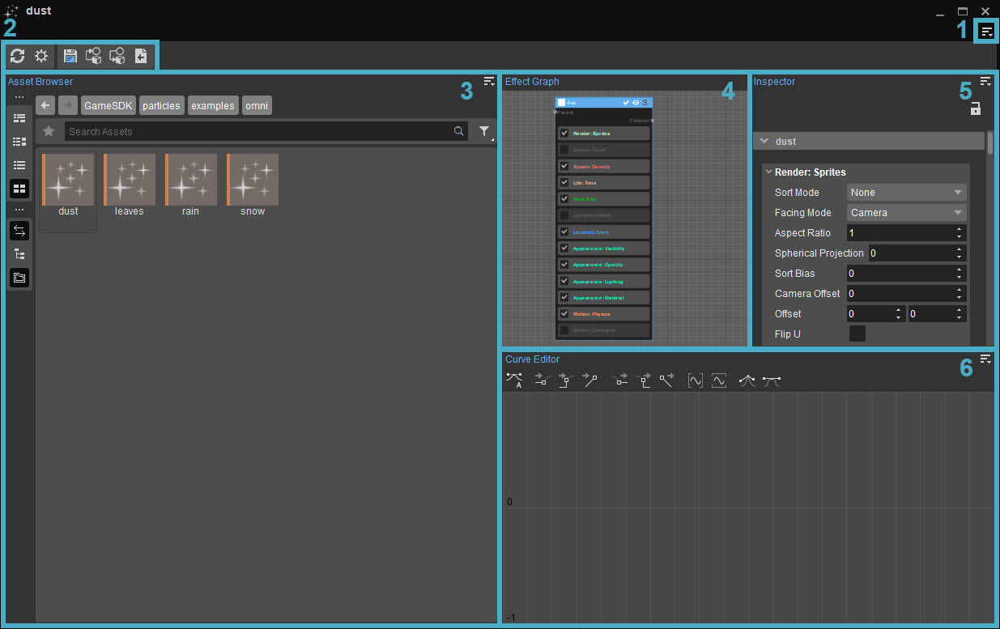
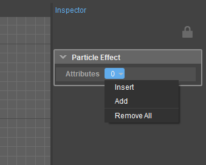
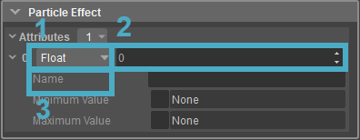
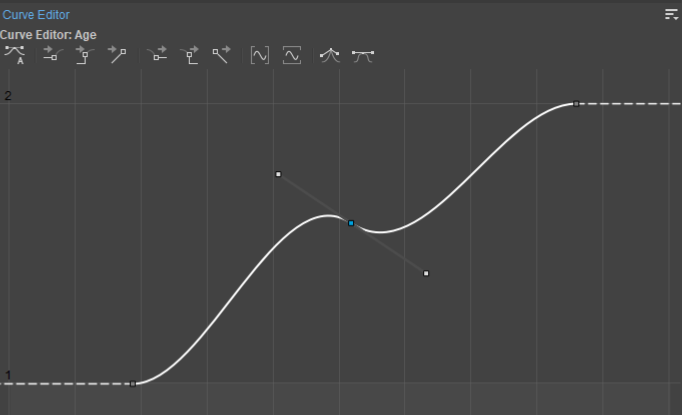
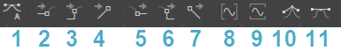
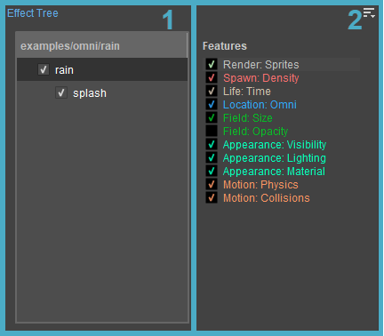

Overview
Particles refer to the engine elements that are used to create visual effects or small physical objects that can move, hit surfaces, emit light, react to collisions etc. The Particle Editor lets users view the existing particle entities or create a new one from scratch. By using specific components and features, users can design unique and powerful visual effects such as smoke, weather effects and/or explosions.
The particle effect features and the parent - child particle dependencies can be modified in this editor. It is especially useful when users want to create second generation particles that are spawned out of the first generation particles. It also allows the user to utilize GPU particles and makes it easier to switch from CPU particles to GPU particles. This feature ensures that the particles have a much greater level of physical interaction and that more particles can be displayed on the screen at a time.
The Particle Editor can be found under Tools → Particle Editor.
You can create a default particle effect through the Asset Browser. To do so, open the Asset Browser, browse to the folder where you want to create the particle, right-click on an empty space in the folder and choose New → Particle from the context menu.
For more information about the particle effect creation workflow, please refer to the Creating a Particle Effect page.
By default, the Particle Editor layout consists of the following panels:

1. The Menu
The Menu can be accessed via the
File
Option | Description |
|---|---|
New | Brings up the Create Particles panel where a particle effect can be named and saved in a defined folder. |
Open | Allows users to choose an existing particle asset to modify or use in the current level. Particle effect options can also be accessed by double clicking a particle asset on the Asset Browser. |
Close | Closes the current particle asset. |
Save | Saves the current particle asset. |
Save As | Saves the current particle asset under a different name and/or directory. |
Recent Files | Shows a list of particle assets that were opened recently. |
Reload | Reloads the particle effect. |
Show Effect Options | Displays the Effect Options on the Inspector panel instead of Properties. See Effect Options for a more detailed explanation. |
Load from Selected Entity | Loads an effect from an entity selected in the Viewport. |
Apply to Selected Entity | Applies an effect to an entity selected in the Viewport. |
Import... | Imports an existing Pfx1 effect from the Particle Editor Tab in the Database View tool directly into the Particle Editor System. For more information about the Pfx1 effects, please refer to Particles Tab (Legacy Particle Editor). |
Edit
Option | Description |
|---|---|
Undo | Undoes the last action. |
Redo | Redoes a previously undone action. |
Copy | Copy a node. |
Paste | Paste a node. |
Delete | Delete a node. |
Toolbars
Option | Description | ||||
|---|---|---|---|---|---|
Customize... | Opens the toolbar customization window allowing users to customize existing toolbars, and/or create new toolbars within the Particle Editor. | ||||
Lock Toolbars | When disabled, the positions of toolbars and spacers within the Particle Editor can be changed by drag and drop. | ||||
Spacers | The following options allow users to use spacers in positioning their toolbars.
The Spacers menu options are only available when Toolbars → Lock Toolbars is disabled. | ||||
| Toolbars | Lists all default and custom toolbars created for the Particle Editor, allowing you to select which toolbar you'd like to hide or display. The default Particle Editor toolbars are as follows:
|
When a tool has a toolbar, whether this is a default one or a custom one, the options above are also available when right-clicking in the toolbar area (only when a toolbar is already displayed).
Window
Option | Description |
|---|---|
Panels | Displays the panels that have been previously closed or not yet opened on the Particle Editor. The following panels can be found in the Particle Editor:
|
Reset layout | Resets the layout. This option is a quick way to go back to the default Particle Editor view. |
Help
Opens the documentation page for this tool.
2. Toolbar
When the Particle Editor is opened for the first time, the default Toolbar below is displayed:
Button | Description |
|---|---|
Save | Saves an effect. |
Load from Selected Entity | Loads an effect from a selected entity. |
Apply to Selected Entity | Applies an effect to a selected entity. |
Import Selected Pfx1 Effect | Imports an existing Pfx1 effect from the Particle Editor tab on the DataBase View tool directly into the Particle Editor System. |
Reload Effect | Resets the currently open effect components to their original state. |
Show Effect Options | Opens the Effect Options. See Effect Options below for a more detailed explanation. |
3. Asset Browser
Tool-specific Asset Browser panels let users view and edit the assets within the tool that is currently being used. Unlike the stand-alone Asset Browser tool, the assets that are displayed on this panel are pre-filtered by default; meaning it only displays the assets that are relative to the tool itself.
When the Sync Selection 
4. Effect Graph
The Effect Graph is the default editing panel on which users can modify existing particle effects or create a new one from scratch; it is a node based panel where users can view and edit components, their parent-child relationships and the particle effect features.
If a tree-based layout is preferred, the Effect Tree panel can be used to edit and create particle effects instead. For more information, see the Effect Tree section on this page.
Button | Name | Description |
|---|---|---|
Name | By double clicking, users can edit the component's name. | |
Enable/Disable | Enables or disables the component. Disabled components are not processed by CRYENGINE, but are still stored in the memory. This option is often used during production to experiment with different techniques. | |
Visible/Invisible | Makes the component either visible or invisible. Particles in an invisible component are hidden, but are still simulated. Best used on parent components that are not supposed to be visible, but need to be visible while editing. For more information about parent-child relationships, please refer to SecondGen. | |
Solo | Makes every component in the effect invisible except for this one. Useful to isolate a single component from others. |
Users can navigate around the Effect Graph panel by holding and dragging the RMB on an empty space.
Each feature that is available on a component can be moved around by dragging & dropping.
The Effect Graph panel also allows you to pick components from the Context Menu. It includes preset components that can be used to create new particle effects or to modify the existing ones to achieve more complicated and sophisticated results.
In order to access the Context Menu, right click on a blank section on the Effect Graph panel.
Component | Description |
|---|---|
advanced | Contains specific effect presets like fire, explosions, rain, etc. Motion, timing and other features that may be needed to create an effect are already included in these presets. Most of these effects should work fine; however, users may also need to add a texture and tweak the lighting properties in order to get the desired outcome. |
default (menu) | Contains the bare minimum setup presets like audio, sprites, GPU sprites, ribbon, etc. These presets have no motion or timing elements and are not effect specific. |
| default (node) | Default node is a sort of starting node which can be used to create more complicated effects and it can also be found under Advanced dropdown menu. This node includes most of the features that users might need. |
5. Inspector
The Inspector panel allows users to review the feature properties and attribute options. It can either display all the feature properties of a component, or the properties of a selected feature or attribute. In other words, if a component is selected, all the available features and their properties will be shown on the Inspector panel; however, if a single feature is selected, only the properties of that specific feature will be displayed instead.
Effect Options
The Effect Options button lets you add Attributes to the currently selected particle effect.
Effect options can be displayed by clicking on the
Attributes
Attributes are used to establish a layer of communication between the Particle Editor and other systems in the Engine, or to influence a property's value individually and/or dynamically.
They can, for instance, be used;
- In the Component: ActiveIf and Component: EnableIf Features to enable or disable a certain Component.
- As a Modifier to linearly scale a property's value.
- As a Domain in an applicable Modifier, acting as the input for the Modifier function, scaling the property's value by the function output.
When used in conjunction with other systems, e.g. Flow Graph nodes, Attributes can work in line with in-game events, influencing the property to which it's attached in a certain way, at a certain time.

To add an Attribute to the particle effect, click the Attributes 
To remove all Attributes, choose the Remove All option from the
To remove Attributes individually, right-click one, and choose Remove.

Effects can have any number of custom attributes. Each attribute can have the following properties:
Property | Description |
|---|---|
Type (1) | Specifies the type of attribute to be used:
|
Default Value (2) | Sets a default value; the value is based on the selected type. |
Name (3) | Specifies a custom name to be used by the effect's modifiers. Names are case sensitive, please make sure to type the names correctly. |
Minimum Value, Maximum Value | After enabling Minimum and/or Maximum Value options, user can set the parameters to the desired value at which the attribute gets clamped. |
When a new Attribute is added to the particle effect, it appears in the Properties panel, under the Emitter Attributes section, where each Attribute is listed along with a value field or a check box, depending on its value type.
Value changes made in the Properties panel are applied only to the selected instance of the particle effect.
To change the value of an Attribute in all instances of a particle effect, modify its value in Effect Options.
The button lets you revert an Attribute to its default value, which is by default 0, or it can be set in the Particle Editor's Effect Options.
Different Types can be converted into each other. For example, if a modifier expects an attribute of float type, but a color is assigned to it, then the attribute is first converted into a float based value on color brightness. If a modifier is expecting a color attribute, but a boolean attribute is assigned, then the attribute turns either black or white.
For more information about how to use attributes in an effect, please see Modifiers.
Properties
When a feature is selected, its properties can be modified on the Inspector panel. This allows users to create various effects for the particles they use.
For a detailed information about individual feature properties, please refer to Particle Effect Features.
6. Curve Editor
The Curve Editor can be used to tweak certain properties much in the same way that users can in the Environment Editor. It shows the progression of the values for the selected feature over the course of a specific time and how gradually they change. It is especially useful when time-based periodic changes are envisioned for a particle effect.
In order to edit the particle effect features on the Curve Editor panel, Color Modifiers or a feature with the Curve or the Double Curve modifier should be selected.
For more information about Curve and Double Curve modifiers, see the Modifiers page.
For more information about Features that support modifiers, refer to Particle Effect Features.

Curve Editor Toolbar

Curve Editor Toolbar lets users modify the curves and give them certain properties. It consists of the following options:
Button | Name | Description |
|---|---|---|
| 1 | Set in and out tangent to auto | Sets the tangents for the selected key(s) (the squares in the graph) to auto. |
| 2 | Set in tangent to zero | Sets the in tangent for the selected key(s) (the squares in the graph) to zero. |
| 3 | Set in tangent to step | Sets the in tangent for the selected key(s) (the squares in the graph) to step. |
| 4 | Set in tangent to linear | Sets the in tangent for the selected key(s) (the squares in the graph) to linear. |
| 5 | Set out tangent to zero | Sets the out tangent for the selected key(s) (the squares in the graph) to zero. |
| 6 | Set out tangent to step | Sets the out tangent for the selected key(s) (the squares in the graph) to step. |
| 7 | Set out tangent to linear | Sets the out tangent for the selected key(s) (the squares in the graph) to linear. |
| 8 | Fit curves horizontally | Fits the graph into the graph window horizontally. |
| 9 | Fit curves vertically | Fits the graph into the graph window vertically. |
| 10 | Break tangents | Sets the tangents for the selected key(s) (the squares in the graph) to auto. |
| 11 | Unify tangents | Sets the tangents for the selected key(s) (the squares in the graph) to auto. |
Curves in the Particle Editor are not affected by the size of the handles (derivative weight). This is for performance reasons since these curves are to be evaluated for every particle every frame.
Holding the Shift key will let users move the keys horizontally or vertically on a straight line.
Effect Tree
The Effect Tree panel can be used to inspect the particle effect components, features and the parent - child relationships on a tree-based layout. It also allows users to navigate through the particle effect features, and modify their parameters.
The Effect Tree is not a part of the default layout of the Particle Editor. To access the Effect Tree panel, go to Window → Panels → Effect Tree.

The Effect Tree panel has two different sub-panels: the Component Tree (1) and the Features Tree (2):
1. Component Tree
The Component Tree displays all the available components on a simpler, tree-based list.
The following options may appear when right-clicking on a component or an empty space on the list:
Option | Description |
|---|---|
Add Component | Adds new components to the Component Tree. In order to add components, right click on an empty space on the Component Tree and choose Add Component. For more information about preset components, please see the Context Menu section. |
Add Child Component | Adds a new child component to the selected parent component. To add a child component, right click on any tree item and choose Add Child Component. For more information about preset components, please see the Context Menu section. |
Remove | Removes a component from the list. To remove a component, simply right click on it and choose Remove. If a parent component is removed from the list, its child will be removed as well. |
Visible | Makes components visible or invisible. Right click on a component and choose Visible to use this function. Particles in an invisible component are hidden, but still simulated. |
Solo Visible | Makes only the chosen component visible. Particles in an invisible component are hidden, but still simulated. |
Components can be enabled or disabled by left-clicking on the checkbox next to the name field of any component.
To rename components, double-click on the name field of the component.
To move and re-parent components, select a component and drag it on a new parent.
To separate a child from a parent component, drag and drop the child on an empty field below or above another component. When moving a component, a line will appear to indicate on which level the selected component will end up when it is released.
2. Features Tree
The Features Tree displays all the available particle effect features on a simpler, tree-based list.
To display and edit a component’s feature(s), select the component on the Component Tree to fill the Features Tree with all the available features in the selected component. Choosing one afterwards will fill the Inspector panel with its parameters.
When a feature or an empty space in the Features Tree right-clicked, the following options appear on the context menu.
Option | Description |
|---|---|
Append | When an empty space is right-clicked, this option appears. It can be used to assign new features to the selected component. |
Insert | When a feature is right-clicked, this option appears. It adds a new feature above the currently selected feature. |
Remove | When a feature is right-clicked, this option appears. It removes the selected feature(s). |
Features can be enabled or disabled by clicking on the checkbox next to the name field.
The list hierarchy of the features can be reorganized by dragging and dropping it to the desired position.